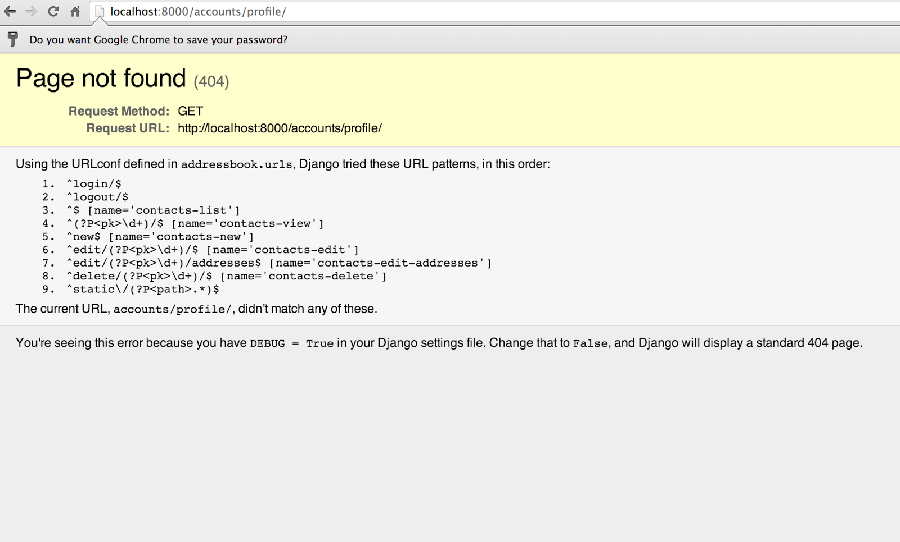

Частичный перевод статьи: Handling Authentication & Authorization
Автор: Натан Йерглер (Nathan Yergler)
Представим, что мы написали простую программу для управления контактными данными и добавили поддержку соответствующей модели для адреса. Есть несколько вещей, которые могут потребоваться прежде чем выпускать приложение во внешний мир. Одна из этих вещей - это аутентификация. В Django имеется встроенная поддержка функций аутентификации.
Чтобы воспользоваться встроенной поддержкой аутентификации, к проекту нужно подключить приложения django.contrib.auth и django.contrib.sessions.
Как можно увидеть в addressbook/settings.py, при создании проекта Django, они уже включены по умолчанию.
INSTALLED_APPS = (
'django.contrib.auth',
'django.contrib.contenttypes',
'django.contrib.sessions',
'django.contrib.sites',
'django.contrib.messages',
'django.contrib.staticfiles',
# Раскомментируйте следующую строку, чтобы включить интерфейс администрирования:
# 'django.contrib.admin',
# Раскомментируйте следующую строку, чтобы включить документацию на интерфейс администрирования:
# 'django.contrib.admindocs',
'contacts',
)
Кроме установки приложений, нужно также установить промежуточное программное обеспечение.
MIDDLEWARE_CLASSES = (
'django.middleware.common.CommonMiddleware',
'django.contrib.sessions.middleware.SessionMiddleware',
'django.middleware.csrf.CsrfViewMiddleware',
'django.contrib.auth.middleware.AuthenticationMiddleware',
'django.contrib.messages.middleware.MessageMiddleware',
# Раскомментируйте следующую строку для включения простой защиты от перехвата щелчков мыши:
# 'django.middleware.clickjacking.XFrameOptionsMiddleware',
)
Как мы помним, во время первого запуска syncdb Django задаёт вопрос - нужно ли создать учётную запись суперпользователя. Это происходит, потому что промежуточное программное обеспечение уже установлено.
В модуле auth из стандартной поставки Django имеются модели User - пользователь, Group - группа и Permission - права. Обычно этого бывает достаточно, если не нужно интегрировать приложение с другой системой аутентификации.
django.contrib.auth содержит несколько представлений, поддерживающих базовые действия по аутентификации, такие как вход, выход, сброс пароля и т.п. Отметим, что этот набор включает в себя представления, но не шаблоны. Поэтому в нашем проекте их необходимо создать.
Для рассматриваемого примера нужно просто добавить в наш проект представления login и logout. Для начала добавим представления в файл addressbook/urls.py.
urlpatterns = patterns('',
url(r'^login/$', 'django.contrib.auth.views.login'),
url(r'^logout/$', 'django.contrib.auth.views.logout'),
У обоих представлений login и logout есть имена шаблонов по умолчанию (registration/login.html и registration/logged_out.html, соответственно). Поскольку эти представления специфичны для нашего проекта и не используются повторно приложением Contacts, мы создадим новый каталог templates/registration внутри каталога приложения addressbook:
$ mkdir -p addressbook/templates/registration
И сообщим Django о необходимости искать шаблоны в этом каталоге, настроив TEMPLATE_DIRS в addressbook/settings.py.
TEMPLATE_DIRS = (
# Поместите здесь строки, такие как "/home/html/django_templates" или "C:/www/django/templates".
# Всегда используйте прямую косую черту, даже в Windows.
# Не забывайте, что нужно указывать полный путь, а не относительный.
'addressbook/templates',
)
Внутри этого каталога сначала создадим файл login.html.
{% extends "base.html" %}
{% block content %}
{% if form.errors %}
<p>Ваше имя пользователя и пароль не подходят. Попробуйте ещё раз.</p>
{% endif %}
<form method="post" action="{% url 'django.contrib.auth.views.login' %}">
{% csrf_token %}
<table>
<tr>
<td>{{ form.username.label_tag }}</td>
<td>{{ form.username }}</td>
</tr>
<tr>
<td>{{ form.password.label_tag }}</td>
<td>{{ form.password }}</td>
</tr>
</table>
<input type="submit" value="Войти" />
<input type="hidden" name="next" value="{{ next }}" />
</form>
{% endblock %}
Шаблон login наследуется от шаблона base.html и отображает форму входа, переданную в шаблон из представления. Скрытое поле next позволяет представлению впоследствии перенаправить пользователя на запрошенную страницу, если при запросе этой страницы пользователь был перенаправлен на страницу входа.
Шаблон выхода - logged_out.html - значительно проще.
{% extends "base.html" %}
{% block content %}
Вы вышли!
{% endblock %}
Всё, что нужно - только сообщить пользователю, что выход завершился успешно.
Если сейчас запустить сервер разработки с помощью runserver и перейти на страницу по ссылке http://localhost:8000/login, то можно увидеть страницу входа. При попытке входа с неправильными данными можно увидеть сообщение об ошибке. Теперь давайте попробуем войти с данными суперпользователя, который был создан ранее.
Погодите, что случилось? Почему мы попали на страницу /accounts/profile? Мы не вводили такой адрес. После успешного входа представление login перенаправляет пользователя на определённый URL и по умолчанию это страница /accounts/profile. Чтобы заменить её, нужно настроить значение LOGIN_REDIRECT_URL в addressbook/settings.py так, чтобы при первом входе пользователь перенаправлялся бы на страницу со списком контактов.
LOGIN_REDIRECT_URL = '/'
Теперь, когда мы можем войти и выйти, было бы неплохо показывать в заголовке имя вошедшего пользователя и ссылки для входа/выхода. Добавим их в наш шаблон base.html, т.к. нам нужно отображать их везде.
<body>
<div>
{{ user }}
{% if user.is_anonymous %}
<a href="{% url 'django.contrib.auth.views.login' %}">Войти</a>
{% else %}
<a href="{% url 'django.contrib.auth.views.logout' %}">Выйти</a>
{% endif %}
</div>